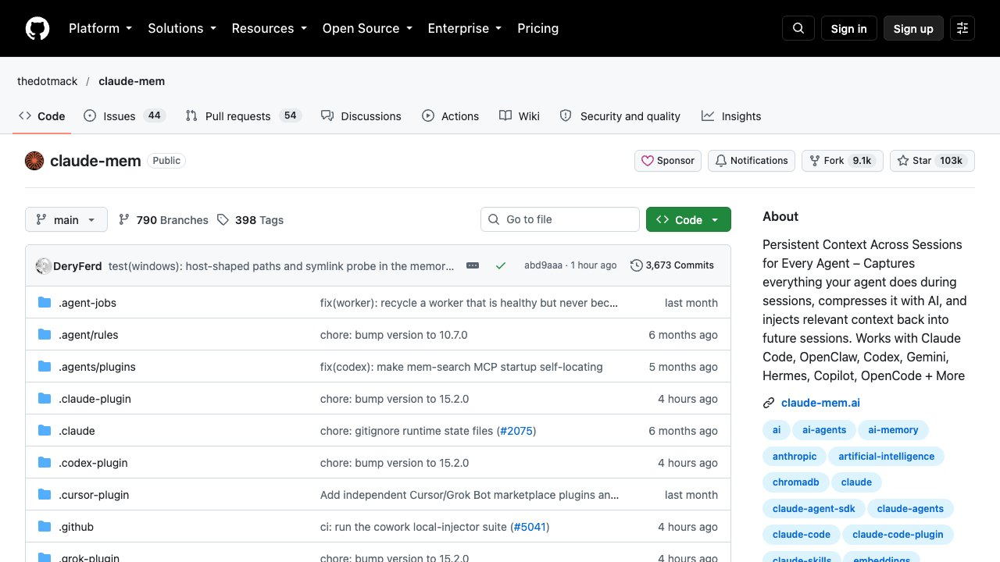

Claude Code hace mucho por sí solo, y por eso se nota tanto lo que no hace. Se te acaba el límite a mitad de tarea. Mañana ya no se acuerda de lo que decidisteis hoy. Lee ficheros y registros enteros para encontrar tres líneas. Y tú sigues escribiendo la misma corrección una y otra vez.
Qué le falta a Claude Code de serie
No son defectos raros, son cinco molestias que casi todo el mundo acaba notando a las pocas semanas de usarlo a diario:
- El límite. Cuando se agota, la sesión se para hasta que se renueva. Tienes más detalle en la guía del límite de uso.
- La memoria. Cada sesión empieza en blanco. Lo que no esté escrito en tu
CLAUDE.mdse pierde (cómo escribirlo). - El gasto de tokens. Registros, salidas de comandos y ficheros grandes entran enteros en la conversación y cuestan lo mismo que lo que sí importa.
- La configuración. Hay hooks, skills, servidores MCP y subagentes, y nadie sabe cuáles le convienen a su proyecto.
- El aprendizaje. Te corrige, tú le corriges, y la próxima vez vuelve a ocurrir.
Las cinco herramientas de esta guía son gratuitas y de código abierto, y cada una resuelve una de esas molestias. No son oficiales de Anthropic, salvo una, y conviene tratarlas como cualquier software que se instala en tu ordenador: leer qué hace antes de dar permisos.
1. OmniRoute: cuando se acaba el límite
OmniRoute es una pasarela local: un único punto de entrada que reparte tus peticiones entre muchos proveedores de modelos. Su idea es que, cuando llegas al límite de uno, pase solo al siguiente disponible sin cortar tu conversación. Con el modelo en auto, construye una combinación a partir de los proveedores que hayas conectado.
Según su propio README, el catálogo documentado de niveles gratuitos suma alrededor de 1.620 millones de tokens al mes. Es la suma de todos los proveedores gratis juntos, no una promesa para tu cuenta: depende de que los conectes y de los límites de cada uno.
npm install -g omnirouteInstalación global con npm (según su README).Su README también indica que omniroute run lanza varias herramientas de línea de comandos, entre ellas Claude Code.
La pega importante: los modelos gratuitos no son Claude. Funcionan, pero con otra calidad y otras reglas de privacidad: tus peticiones pasan por esos proveedores. No lo uses con código o datos que no quieras compartir, y guarda tus claves con cuidado.
2. claude-mem: memoria entre sesiones
claude-mem captura lo que hace el agente durante las sesiones, lo comprime con IA y devuelve el contexto relevante en las siguientes. La utilidad es directa: no tienes que explicar otra vez la decisión de la base de datos o por qué descartasteis aquella opción.
npx claude-mem installInstalador oficial, según su README.Dos detalles del README que conviene leer antes de ejecutar nada: el instalador, por defecto, te pide iniciar sesión con tu correo mediante un enlace mágico (sin tarjeta), y existen indicadores para saltarse ese paso, como --provider. Decide qué quieres antes de instalar.
La pega: una memoria guarda información de tu proyecto. Mira qué almacena, dónde, y no la actives en proyectos con datos de clientes si no lo tienes claro.
3. Headroom: menos tokens, mismas respuestas
Headroom comprime lo que el agente lee —salidas de herramientas, registros, ficheros, fragmentos de documentos e historial— antes de que llegue al modelo. Su README habla de las mismas respuestas con una fracción de los tokens, y de que la compresión se hace en tu máquina.
pip install "headroom-ai[all]"Instala la herramienta de línea de comandos (según su README).headroom wrap claudeArranca Claude Code envuelto con Headroom.La descripción del propio repositorio cifra el ahorro en torno a un 20 % menos de tokens en agentes de programación. Es un orden de magnitud, no una garantía: depende de qué lees tú. Mide tu gasto antes y después con el mismo tipo de trabajo.
4. Claude Code Setup: qué configurar en tu proyecto
Es un plugin del directorio oficial de plugins de Anthropic. Analiza tu código y te recomienda las automatizaciones que más encajan: servidores MCP, skills, hooks, subagentes y comandos. Según su README, sugiere las una o dos mejores de cada categoría, y es de solo lectura: no modifica tus archivos.
/plugin install claude-code-setup@claude-plugins-officialSe escribe dentro de Claude Code. Si no lo encuentra, búscalo en el gestor con /plugin.Una vez instalado, se usa pidiéndoselo con tus palabras: «recomiéndame automatizaciones para este proyecto» o «ayúdame a configurar Claude Code». Para saber qué es cada pieza, tienes la guía de servidores MCP y la de skills.
La pega: son recomendaciones. Tú decides qué instalas; no añadas todo lo que sugiera.
5. Task Observer: una skill que aprende de tus correcciones
Task Observer es una skill que vigila el trabajo del agente buscando oportunidades de mejorar tus propias skills: anota tus correcciones, patrones que se repiten y métodos que merece la pena conservar como skills reutilizables. En vez de corregir lo mismo cada semana, queda registrado.
No se instala con un comando: es una carpeta. Su README indica que hay que mantener juntos el archivo SKILL.md, la carpeta references/ y la carpeta scripts/, y copiarlos a tu carpeta de skills, normalmente ~/.claude/skills/task-observer/.
Atribución: la licencia CC BY 4.0 exige dar crédito al autor si la compartes o la reutilizas. Y es la herramienta más pequeña y con menos años de las cinco: pruébala en un proyecto de poco riesgo.
Cómo combinarlas sin liarla
No instales las cinco el mismo día. Si algo va mal, no sabrás cuál es la culpable. Un orden razonable, de menos a más invasivo:
- Primero Claude Code Setup. Es de solo lectura y te enseña qué conviene.
- Después claude-mem, si trabajas en el mismo proyecto muchos días seguidos.
- Luego Headroom, y compara tu gasto una semana.
- Task Observer cuando ya tengas skills propias que mejorar.
- OmniRoute al final: cambia por dónde viajan tus peticiones, así que es el que más cuidado pide.
Cada vez que añadas una, abre una sesión de prueba, comprueba que todo funciona y apunta la fecha. Si algo se rompe, desinstalas la última y sigues.
Lo honesto
- Las estrellas no son calidad. Muestran popularidad. Lee el repositorio, los problemas abiertos y la fecha del último cambio antes de instalar.
- Todas tocan tus datos de una forma u otra: leen tu código, guardan contexto o reenvían peticiones. Revisa qué hacen con ello.
- OmniRoute no es Claude. Es una forma de seguir trabajando con otros modelos gratuitos, con su calidad y su privacidad.
- Los comandos pueden cambiar. Los hemos tomado de los README a fecha de 25 de octubre de 2026; si fallan, consulta la documentación actual.
- No tenemos relación con ninguna de estas herramientas ni cobramos por recomendarlas.
Si empiezas desde cero con Claude Code, antes de nada pásate por la guía de Claude Code en español, con todas las guías en orden.